| 日付 | 2026年7月4日（土） |
|---|---|
| 山域 | 越後 |
| メンバー | 家族（妻） |
| 山行形態 | 日帰り |
| アクセス | 車 |
| ルート (Map) | 飯士山登山口 (8:30) - (9:02) リフト上部 - (9:56) 飯士山 (10:20) - (10:36) リフト上部 - (11:29) 飯士山登山口 |
今週も関東は雨模様。今度は新潟方面の天気が良さそうということで、
先週の福島遠征に引き続き、新潟遠征に出かけることにする。行先は飯士山。
スキー場のある小さな山だが、山頂からは展望が期待できそうだ。
スキー場の前の登山者用駐車場に車を停める。標高530m。
まずはスキー場の中の道を登っていく。
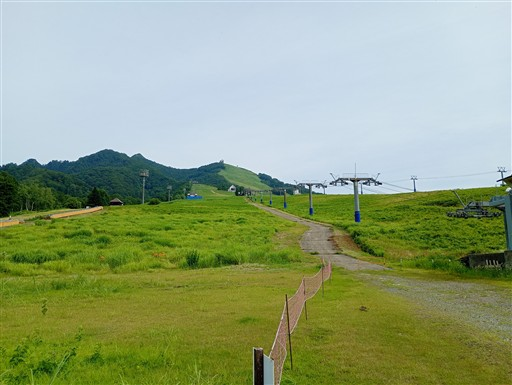
スキー場の斜面はシダ植物が繁茂している。
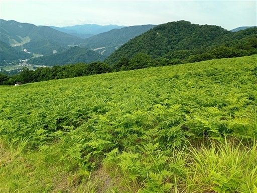
スキー場の上端に達し、ここから登山道が始まる。
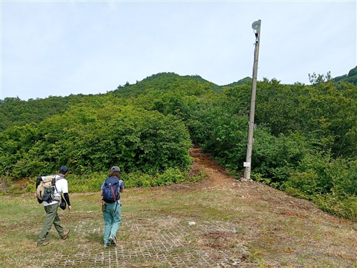
背後は谷川連峰。ずいぶんと展望の良いスキー場だ。
群馬方面は少し雲が出ている。
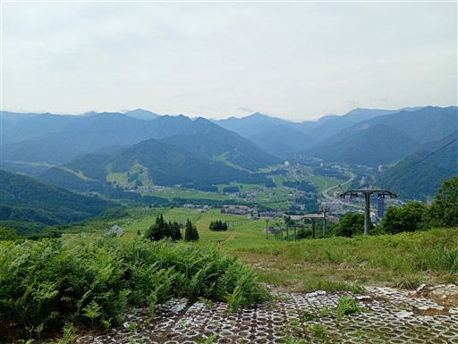
標高777mの標識。この山は1111mのゾロ目の山なので、標識もゾロ目だ。
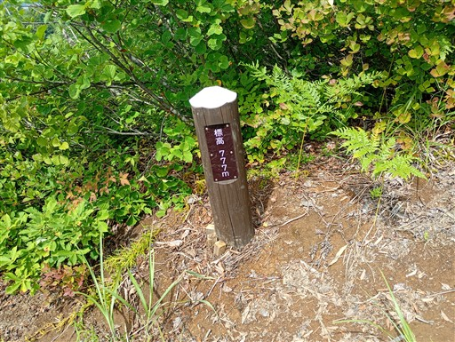
豪雪地帯だからか高い木は少なく灌木帯が続く。
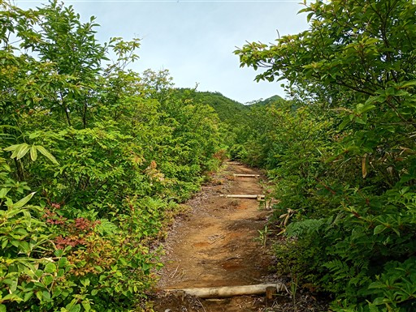
888mに到着。
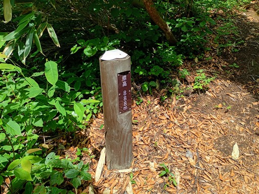
ここより上部にもまだスキーリフトがある。下山時はあちらを迂回する予定だ。
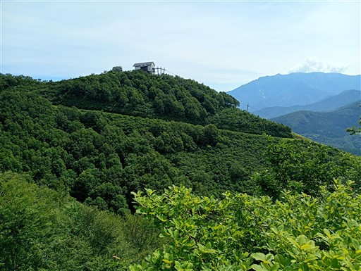
999mに到着。あと1ピッチで山頂だ。
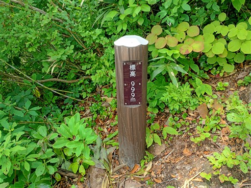
展望の良い場所に出てくる。
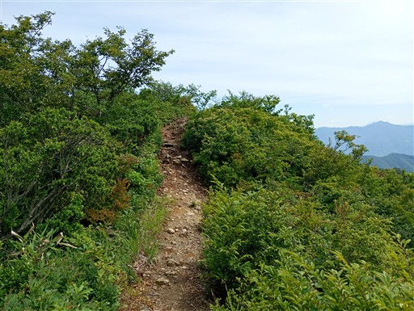
飯士山の鋭いピークが目の前だ。
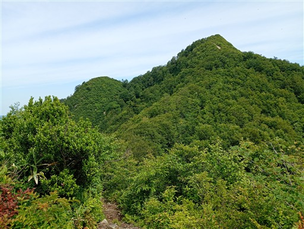
エゾアジサイ。鮮やかな青色が美しい。
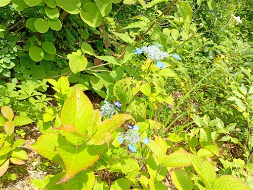
山頂直下の岩場。鎖が設置されている。
鎖を使うほどの場所でもないが、ちょっと滑りやすい。
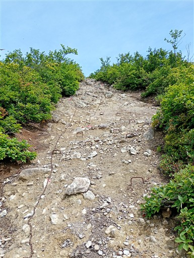
振り返ると谷川連峰のパノラマが広がる。
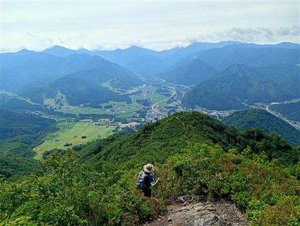
飯士山に到着。標高1111m。
ゾロ目にならないからか、小数点以下の数字は消されているように見える。
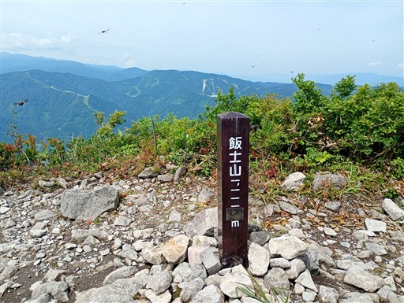
山頂からは360度の大展望が広がる。目の前に見えるのは巻機山。
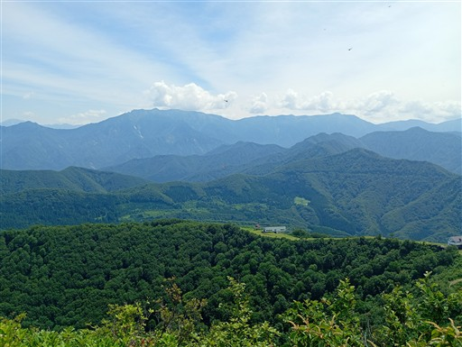
その左には手前の尾根に隠されているが八海山、越後駒ヶ岳、中ノ岳が見えている。
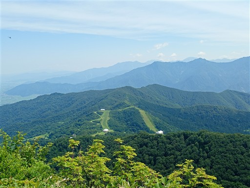
苗場山方面はだいぶ雲が出ている。
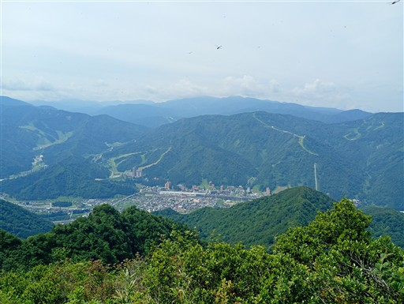
山頂の風景。展望版が設置されている。
たまに登山者が通過するが、ここで足を停める人はなぜか少ない。
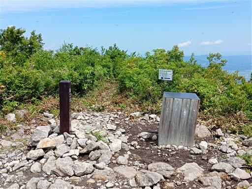
少し先に1767年に建立された石仏があると書かれていたので見に行ってみる。
長年の風雪にさらされ表面はだいぶ凹凸がなくなっている。
なんと賽銭に千円札が巻かれているが、雨で傷まないのだろうか？
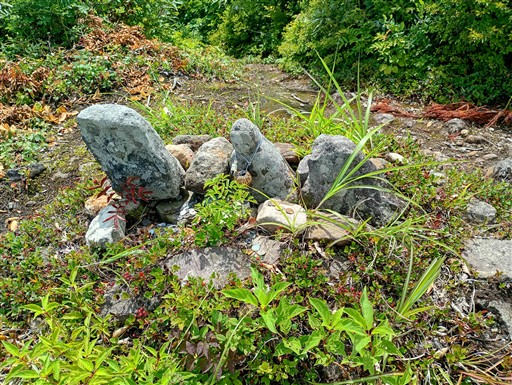
ここからは北側の展望が大きく広がる。
本日の山行のもう一つの候補だった権現堂山が微かに見えている。
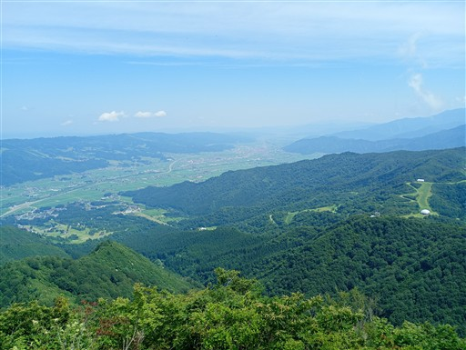
やたら鮮やかなバッタが跳びはねている。
調べたらクサツフキバッタというバッタのようだ。
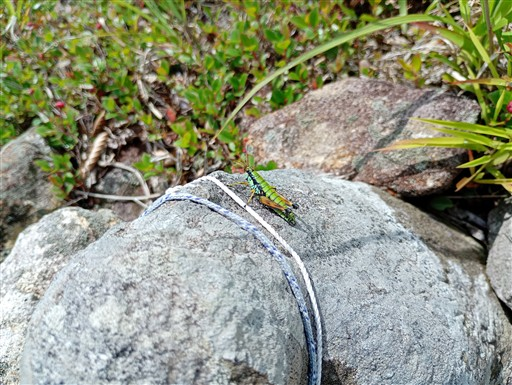
展望を楽しんだら下山開始。
山頂直下の分岐点で往路とは異なるコースを選択し、周回コースを歩く。
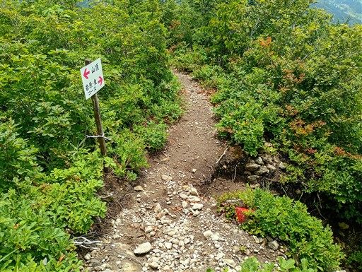
一箇所だけ岩場がある。迂回路もある。
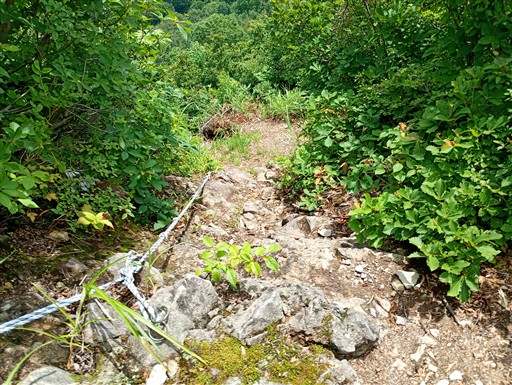
あちらこちらにある蜘蛛の巣は雨でみな濡れている。
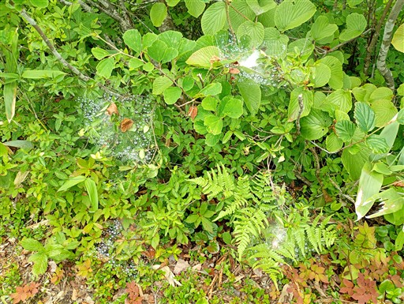
スキーのコース分岐が多いが、標識は完備されている。
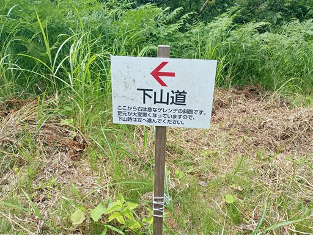
スキー場リフトの最上部。案外巨大な建物だ。
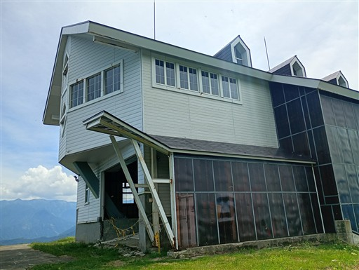
右に行っても左に行っても迂回コース。本コースどこ？
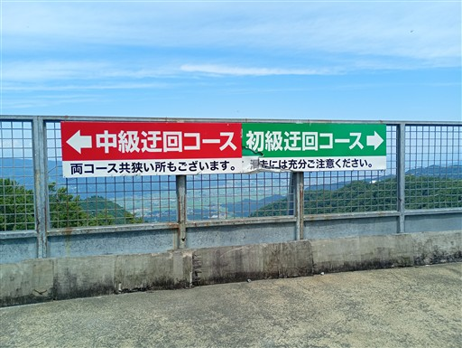
ここからは再びスキー場のゲレンデ歩き。巻機山を見ながら下っていく。
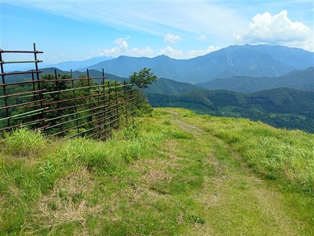
オオキンケイギク。繁殖力が非常に強く、今では栽培が禁止されている帰化植物。
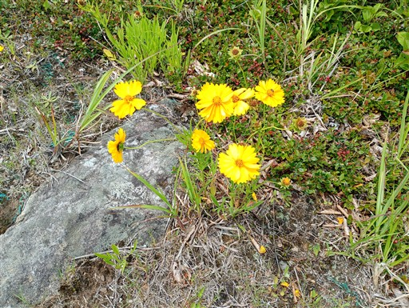
オカトラノオ。白くて小さな花がたくさん付いている。
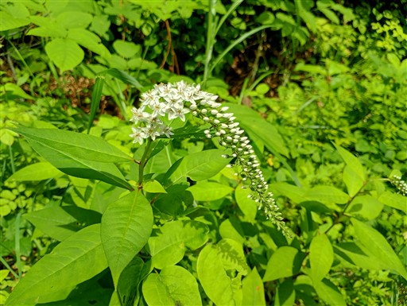
スキー場のだいぶ下部まで下りてきた。
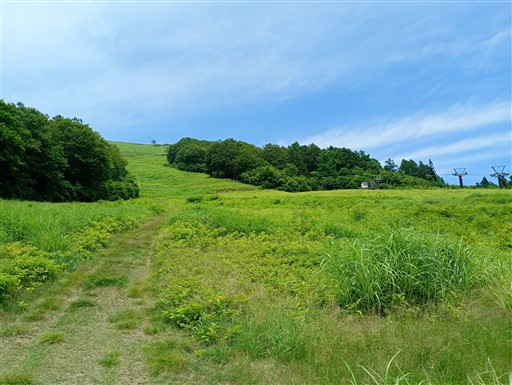
ルドベキア。こちらも観葉植物が野生化した帰化植物。
強烈な見た目で、こちらが気圧されそうだ。
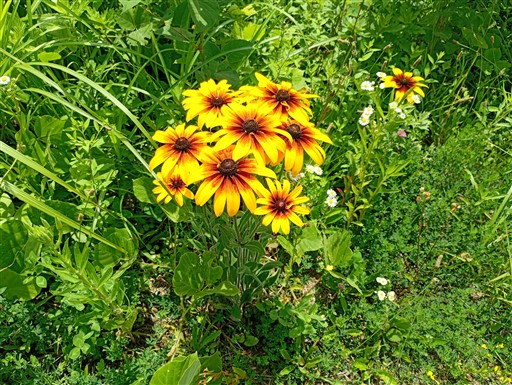
下界近くまで下りてきた。真ん中のピークがおそらく飯士山。
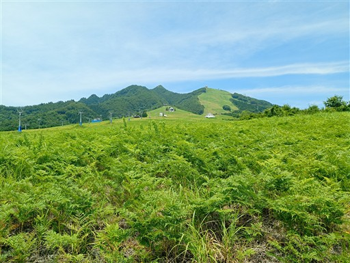
駐車場まで下りてくる。この辺りはいかにもスキー場らしい町が広がっている。
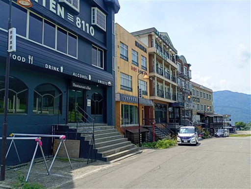
帰りに湯沢中央公園に立ち寄る。
せせらぎがあったので足を水に浸けてみたのだが、驚くほど冷たい。
結構暑い日だったのだが、恐らく水を循環させていないのだろう。
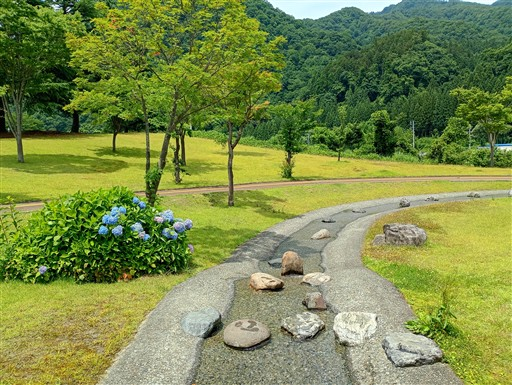
木陰で昼食とおやつ。飯士山近辺のリゾートマンション群が並んでいる。
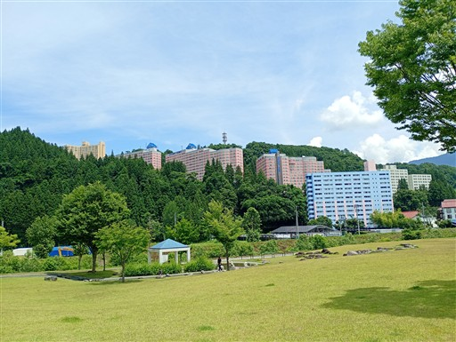
まだお昼で帰るには早すぎるので清津峡に寄り道することにする。
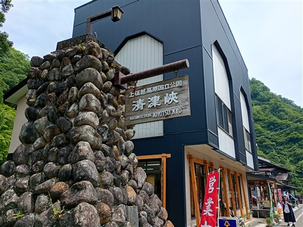
トンネル入口。料金は1200円/人。
2014年に訪問した時は600円で、この10年で値段が倍になった。
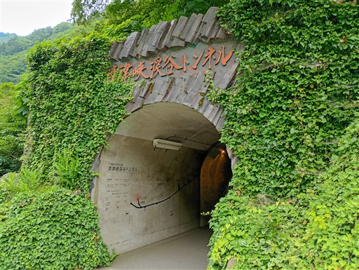
トンネル内を歩いていく。中は結構涼しい。
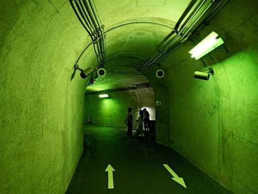
第一見晴所。
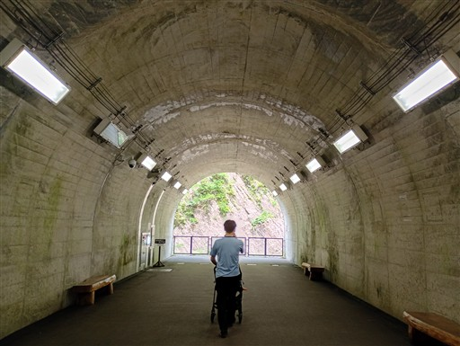
柱状節理の見事な渓谷が見られる。
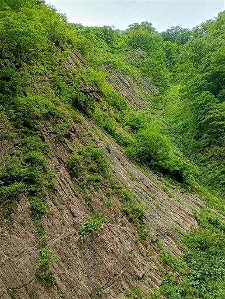
続いて第二見晴所。目が回りそうなペイントが施されている。
真中にあるのはトイレらしい。
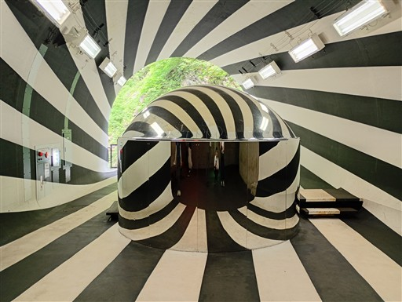
見える景色は以前と変わらない。
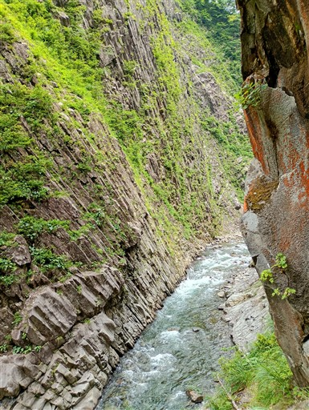
第三見晴所。こちらも現代アート風に装飾されている。
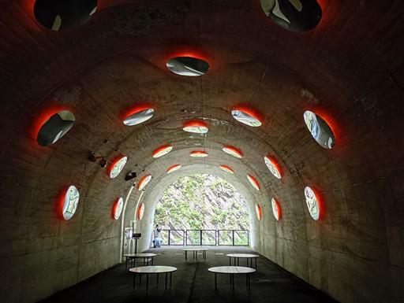
最後のパノラマステーション。水が張られていて鏡の役割を果たしている。
非常に有名な景色だ。この試みによって清津峡の訪問者は5～6倍に増えたというのだから驚きだ。
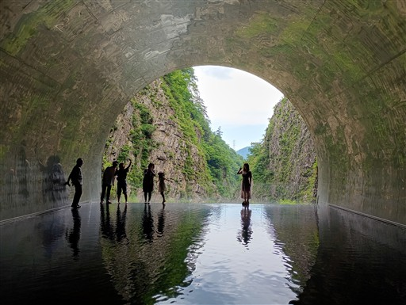
柱状節理のV字渓谷。
以前来たときはスノーブリッジが邪魔だったが、今はきれいに見渡せる。
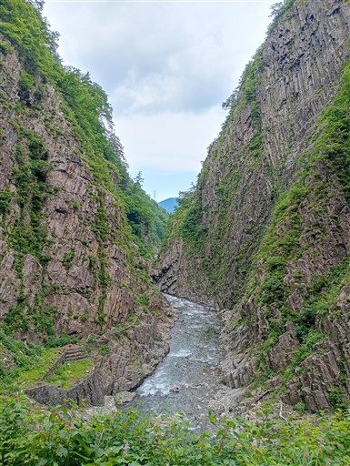
トンネル先端から反対側を写した写真。
水は真ん中は15cmくらいの深さがあるが、端は数cmで靴で歩けるようになっている。
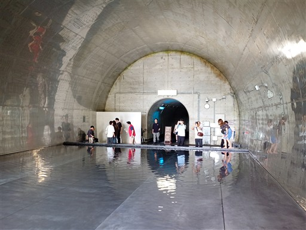
清津峡入口付近にあるショップの上の足湯。ここまでがまとめてアートらしい。
清津峡の観光はここまで。ショップでお土産を買って帰宅する。
飯士山は好展望の良い山だったが、3時間程度の歩行でちょっと物足りなかった。
観光と合わせることで、ちょっと充実したお出かけになった。
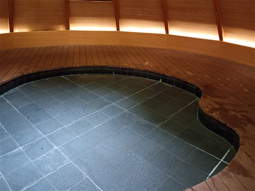